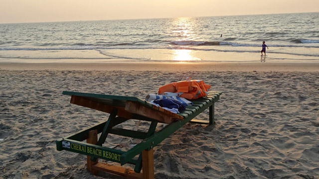

Cherai Beach
Around two dozen kilometres from the industrial district of Ernakulam and to the side of the Vypeen Island lies every swimmer’s paradise, Cherai Beach.
It provides a wonderful view of the famous Chinese Fishing Nets or Cheena Vala well. The nearby shacks provide you with fresh cuisine that fills you up perfectly after a delightful swim.
The area itself has seen many new resorts and hotels crop up, which have facilitated the increase in tourist activity.
Cherai Beach has a 10 km long coastline that is clean and sandy, perfect for sunbathing, swimming and surfing.
The best time to visit cherai beach is during the evenings, to watch a gorgeous sunset.

Rating:
4.4/5 stars
Getting there:
Nearest railway station: Ernakulam Junction, about 30 km | Aluva, about 25 km
Nearest airport: Cochin International Airport, about 20 km
Address:
Kochi, Kerala, 683514, India
Timings:
Monday to Sunday:
9:00 am – 6:00 pm